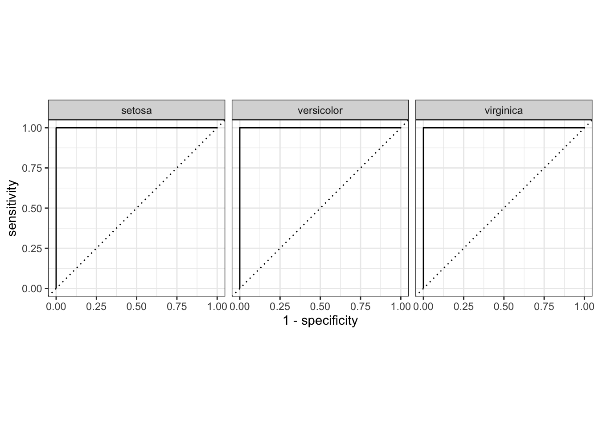
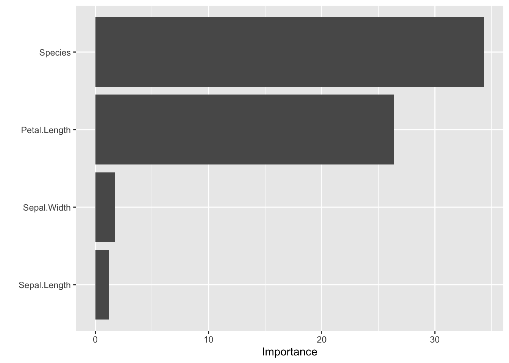

Knime Workflow
Consider this Knime workflow:

That’s a simple Random Forest workflow, you can download the Knime worfklow here.
Translate it to R!
Load Packages
library(tidyverse) # data wrangling
library(tidymodels) # modelling
library(conflicted) # name clashes
library(caret) # confusion matrix
library(vip) # variance importance plots
library(gt) # nice table formattingLoad Data
data(iris)glimpse(iris)## Rows: 150
## Columns: 5
## $ Sepal.Length <dbl> 5.1, 4.9, 4.7, 4.6, 5.0, 5.4, 4.6, 5.0, 4.4, 4.9, 5.4, 4…
## $ Sepal.Width <dbl> 3.5, 3.0, 3.2, 3.1, 3.6, 3.9, 3.4, 3.4, 2.9, 3.1, 3.7, 3…
## $ Petal.Length <dbl> 1.4, 1.4, 1.3, 1.5, 1.4, 1.7, 1.4, 1.5, 1.4, 1.5, 1.5, 1…
## $ Petal.Width <dbl> 0.2, 0.2, 0.2, 0.2, 0.2, 0.4, 0.3, 0.2, 0.2, 0.1, 0.2, 0…
## $ Species <fct> setosa, setosa, setosa, setosa, setosa, setosa, setosa, …Stratified sampling
split_vector <- initial_split(iris,
strata = Species)traindata <- training(split_vector)
testdata <- testing(split_vector)Random Forest classification model in R
Define and run Random Forest classification model
Define learner (model)
First define the model:
rf_mod <-
rand_forest(trees = 100) %>%
set_engine("ranger") %>%
set_mode("classification")Define recipe
rf_recipe <-
recipe(Species ~ ., data = traindata) %>%
step_zv(all_predictors()) # filter zero variance variablesA recipe only contains
- names of variables
- their roles
- planned prepossing steps (here only filter all zero variance variables)
rf_recipe## Data Recipe
##
## Inputs:
##
## role #variables
## outcome 1
## predictor 4
##
## Operations:
##
## Zero variance filter on all_predictors()Put workflow together
workflow() %>%
add_recipe(rf_recipe) %>%
add_model(rf_mod) -> rf_wf
rf_wf## ══ Workflow ════════════════════════════════════════════════════════════════════
## Preprocessor: Recipe
## Model: rand_forest()
##
## ── Preprocessor ────────────────────────────────────────────────────────────────
## 1 Recipe Step
##
## ● step_zv()
##
## ── Model ───────────────────────────────────────────────────────────────────────
## Random Forest Model Specification (classification)
##
## Main Arguments:
## trees = 100
##
## Computational engine: rangerFit the model to the train data
Then fit it:
set.seed(123)
rf_fit <-
rf_wf %>%
fit(data = traindata)OOB results
rf_fit## ══ Workflow [trained] ══════════════════════════════════════════════════════════
## Preprocessor: Recipe
## Model: rand_forest()
##
## ── Preprocessor ────────────────────────────────────────────────────────────────
## 1 Recipe Step
##
## ● step_zv()
##
## ── Model ───────────────────────────────────────────────────────────────────────
## Ranger result
##
## Call:
## ranger::ranger(x = maybe_data_frame(x), y = y, num.trees = ~100, num.threads = 1, verbose = FALSE, seed = sample.int(10^5, 1), probability = TRUE)
##
## Type: Probability estimation
## Number of trees: 100
## Sample size: 114
## Number of independent variables: 4
## Mtry: 2
## Target node size: 10
## Variable importance mode: none
## Splitrule: gini
## OOB prediction error (Brier s.): 0.04269909Model results in test data
testdata %>%
bind_cols(predict(rf_fit, testdata, type = "prob")) %>%
bind_cols(predict(rf_fit, testdata)) -> testdata_augmentedMulticlass accuracy
testdata_augmented %>%
roc_auc(truth = Species,
.pred_setosa:.pred_virginica)## # A tibble: 1 x 3
## .metric .estimator .estimate
## <chr> <chr> <dbl>
## 1 roc_auc hand_till 1testdata_augmented %>%
metrics(truth = Species,
estimate = .pred_class)## # A tibble: 2 x 3
## .metric .estimator .estimate
## <chr> <chr> <dbl>
## 1 accuracy multiclass 1
## 2 kap multiclass 1ROC
testdata_augmented %>%
roc_curve(truth = Species,
estimate = .pred_setosa:.pred_virginica) %>%
autoplot()
Confusion Matrix
confusionMatrix(data = testdata_augmented$.pred_class,
reference = testdata_augmented$Species)## Confusion Matrix and Statistics
##
## Reference
## Prediction setosa versicolor virginica
## setosa 12 0 0
## versicolor 0 12 0
## virginica 0 0 12
##
## Overall Statistics
##
## Accuracy : 1
## 95% CI : (0.9026, 1)
## No Information Rate : 0.3333
## P-Value [Acc > NIR] : < 2.2e-16
##
## Kappa : 1
##
## Mcnemar's Test P-Value : NA
##
## Statistics by Class:
##
## Class: setosa Class: versicolor Class: virginica
## Sensitivity 1.0000 1.0000 1.0000
## Specificity 1.0000 1.0000 1.0000
## Pos Pred Value 1.0000 1.0000 1.0000
## Neg Pred Value 1.0000 1.0000 1.0000
## Prevalence 0.3333 0.3333 0.3333
## Detection Rate 0.3333 0.3333 0.3333
## Detection Prevalence 0.3333 0.3333 0.3333
## Balanced Accuracy 1.0000 1.0000 1.0000Random Forest regression model in R
Define and run the model
Update model to regression
Update the classification model to regression
rf_mod %>%
set_mode("regression") %>%
set_args(mtry = 3, importance = "impurity") -> rf_mod_regrDefine recipe
rf_recipe_regr <-
recipe(Petal.Width ~ ., data = traindata)Put workflow together
workflow() %>%
add_recipe(rf_recipe_regr) %>%
add_model(rf_mod_regr) -> rf_wf_regr
rf_wf_regr## ══ Workflow ════════════════════════════════════════════════════════════════════
## Preprocessor: Recipe
## Model: rand_forest()
##
## ── Preprocessor ────────────────────────────────────────────────────────────────
## 0 Recipe Steps
##
## ── Model ───────────────────────────────────────────────────────────────────────
## Random Forest Model Specification (regression)
##
## Main Arguments:
## mtry = 3
## trees = 100
##
## Engine-Specific Arguments:
## importance = impurity
##
## Computational engine: rangerOOB results
Then fit the model:
set.seed(123)
rf_fit_regr <-
rf_wf_regr %>%
fit(data = traindata)rf_fit_regr## ══ Workflow [trained] ══════════════════════════════════════════════════════════
## Preprocessor: Recipe
## Model: rand_forest()
##
## ── Preprocessor ────────────────────────────────────────────────────────────────
## 0 Recipe Steps
##
## ── Model ───────────────────────────────────────────────────────────────────────
## Ranger result
##
## Call:
## ranger::ranger(x = maybe_data_frame(x), y = y, mtry = min_cols(~3, x), num.trees = ~100, importance = ~"impurity", num.threads = 1, verbose = FALSE, seed = sample.int(10^5, 1))
##
## Type: Regression
## Number of trees: 100
## Sample size: 114
## Number of independent variables: 4
## Mtry: 3
## Target node size: 5
## Variable importance mode: impurity
## Splitrule: variance
## OOB prediction error (MSE): 0.03710244
## R squared (OOB): 0.9355139Model results in test data
testdata %>%
bind_cols(predict(rf_fit_regr, testdata)) -> testdata_augmentedVariabble importance
pull_workflow_fit(rf_fit_regr) %>%
vip()
Collect performance metrics
testdata %>%
bind_cols(rf_fit_regr %>% predict(testdata)) %>%
metrics(truth = Petal.Width,
estimate = .pred) %>%
gt()| .metric | .estimator | .estimate |
|---|---|---|
| rmse | standard | 0.1543815 |
| rsq | standard | 0.9727964 |
| mae | standard | 0.1024894 |